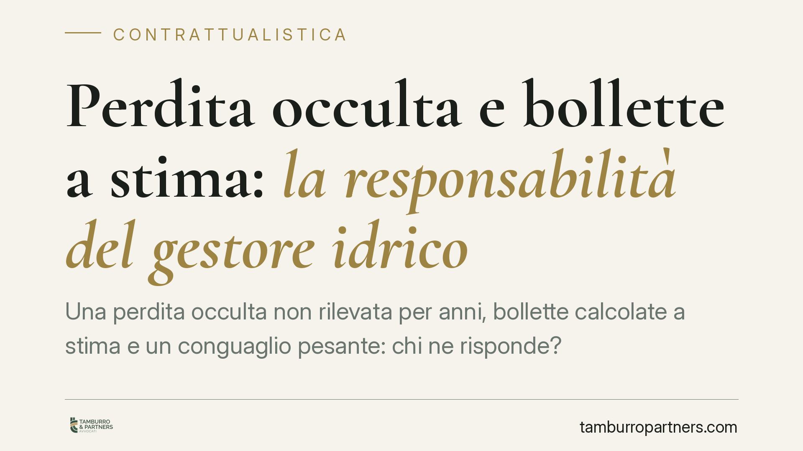

Perdita occulta e bollette a stima: la responsabilità del gestore idrico
Una perdita occulta non rilevata per anni, bollette calcolate a stima e un conguaglio pesante: chi ne risponde? La Cassazione affronta il tema del concorso del gestore idrico nell'aggravamento del danno quando ometta le letture periodiche del contatore. Il fondamento è l'art. 1227 c.c. e la questione interessa ogni utente con consumi fatturati su base presunta.

Il caso
Una società utente di servizio idrico si vede recapitare un conguaglio consistente dopo anni di bollette calcolate a stima. La causa: una perdita occulta sull'impianto a valle del contatore, protratta e non rilevata. Il gestore pretende l'intero importo del consumo registrato; l'utente contesta, osservando che per lungo tempo non sono state effettuate letture reali del contatore, circostanza che ha impedito di accorgersi tempestivamente dell'anomalia.
La questione di diritto è netta: il gestore che ometta le letture periodiche può vedersi addossare una quota del danno complessivo? La Corte di legittimità ha affrontato il punto in sede di rinvio, demandando al giudice di merito la quantificazione della responsabilità rispettiva.
> Nota redazionale: il numero e l'anno dell'ordinanza citati dalla fonte presentano un'incongruenza temporale (data futura) e sono in corso di verifica. Riferiamo pertanto il principio senza cristallizzarlo in una citazione non confermata.
Inquadramento normativo
Il rapporto è un contratto di somministrazione (artt. 1559 ss. c.c.). L'art. 1560 c.c. disciplina la determinazione della quantità somministrata nei casi in cui questa non sia fissata: regola fabbisogno, limiti massimi e minimi. Non detta, di per sé, una regola che impone la fatturazione sul consumo effettivo in luogo della stima; va dunque evitata l'equazione semplicistica "somministrazione a misura uguale consumo reale". La fatturazione su base presunta e il successivo conguaglio restano legittimi, salvo verifica.
Il cuore del ragionamento risarcitorio è altrove. L'inadempimento del gestore rispetto all'obbligazione accessoria di lettura periodica si valuta ai sensi dell'art. 1218 c.c. (responsabilità del debitore). Ma il vero fondamento del "concorso" è l'art. 1227 c.c.: il risarcimento è ridotto quando il creditore ha concorso con la propria condotta a causare il danno (comma 1) e non è dovuto per i danni che avrebbe potuto evitare usando l'ordinaria diligenza (comma 2). Qui il creditore-gestore, omettendo le letture che gli avrebbero consentito di segnalare l'anomalia, contribuisce causalmente all'aggravarsi della perdita.
Resta distinto il piano dell'art. 1455 c.c., che misura la gravità dell'inadempimento ai soli fini della risoluzione del contratto. Altro è risolvere il rapporto, altro è ripartire un danno: i due giudizi non vanno sovrapposti.
Implicazioni pratiche
Il principio non esonera l'utente. L'obbligo di custodia e manutenzione dell'impianto a valle del contatore grava su di lui: la perdita occulta nasce nella sua sfera di controllo. Il gestore non diventa garante dell'impianto altrui.
Ciò che cambia è la possibilità di una ripartizione. Se il gestore ha omesso per anni le letture dovute, la sua inerzia può aver impedito l'emersione tempestiva del guasto e, con essa, il contenimento dei volumi dispersi. In tal caso la quota di danno "evitabile" con letture regolari non può essere interamente scaricata sull'utente.
La valutazione è di merito e concreta: dipende dalla cadenza delle letture pattuite, dall'entità della perdita e dal momento in cui una lettura diligente l'avrebbe segnalata.
Cosa fare in concreto
- Recupera lo storico delle letture: verifica dalle bollette quante siano a stima e quante a lettura reale, ricostruendo i periodi di inerzia del gestore.
- Documenta la perdita: conserva la data di scoperta, l'intervento di riparazione e la relazione dell'idraulico sui volumi dispersi.
- Contesta per iscritto il conguaglio entro i termini, distinguendo la quota di consumo fisiologico da quella imputabile alla perdita.
- Attiva la conciliazione ARERA: il tentativo presso il Servizio Conciliazione dell'Autorità è spesso più rapido ed economico del contenzioso ordinario.
- In sede di contestazione è opportuno affiancare una valutazione tecnica dei volumi ragionevolmente evitabili con letture regolari, a supporto della richiesta di riparto.
Conclusione
Il messaggio è equilibrato: l'utente risponde del proprio impianto, ma il gestore non può pretendere l'intero importo ignorando i propri obblighi di lettura. La ripartizione si gioca sull'art. 1227 c.c. e su una ricostruzione fattuale accurata. Chi riceve un conguaglio sproporzionato dopo anni di stime ha argomenti per discuterne la misura.
---
Contributo informativo a cura di Tamburro & Partners Avvocati. Non costituisce parere legale.
Ogni contratto ha il suo equilibrio.
Se vuoi una revisione delle clausole o una redazione su misura, scrivi allo studio. Ti rispondiamo entro un giorno lavorativo.